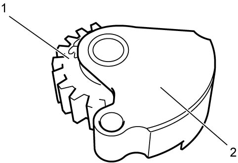
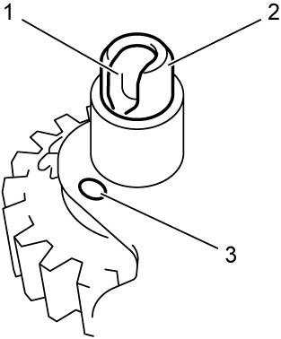

5F
| Reverse Idler Gear Disassembly and Reassembly |
Using an inappropriate hydraulic press or bearing puller could cause personal injury.
Use the hydraulic press and bearing puller which are capable of safely bearing a load of at least 5 tons (11,000 lbs).
NOTICE:
Supporting the gear on the concave side of the puller can cause damage to the gear.
Support the gear on the flat side of the puller.
Disassembly
1)Remove reverse idler gear mounting from shift shafts. 
2)Remove reverse shaft (1) from reverse idler gear mounting (2) using special tool and hydraulic press.

 "Expand image")
3)Remove reverse idler gear (1) with needle bearing (2) from reverse idler gear mounting (3).
 "Expand image")
4)Remove reverse idler gear needle bearing from reverse idler gear, if necessary.
Reassembly
1)Apply oil to reverse idler gear needle bearing, and fit it to reverse idler gear, if removed.
2)Insert reverse idler gear (1) with needle bearing into reverse idler gear mounting (2).

 "Expand image")
3)Align slot (1) of reverse shaft (2) with mark (3) on reverse idler gear mounting and then insert reverse shaft into reverse idler gear mounting.

 "Expand image")
4)Press-fit reverse shaft (1) to reverse idler gear mounting (2) using special tool and hydraulic press.
 "Expand image")
5)Install reverse idler gear mounting to shift shafts.
6)After replacing transaxle inner parts, perform TCM and Clutch Initialization.